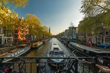

Welcome to the Netherlands!
I'm from Thailand, BUT!! I'm also from Netherlands. These are some of the most beautiful places in the Netherlands that you can visit or go for a HONEYMOON! Every place has a direct link to the web page, so you can learn more about them.
- Amsterdam
- Rotterdam
- The Hague
- Utrecht
- Leiden